规定初始像素覆盖已通过独立数据验收，完整12步与物理安全未通过。Prescribed initial pixel coverage passes the independent DATA audit; full12-step and physical acceptance remain incomplete. Original1280×720; no edits/crop. Every image below is INITIAL, not micro1/final.
{"seed": 2, "proposal_id": 2777, "global_id": 25305, "family": 1}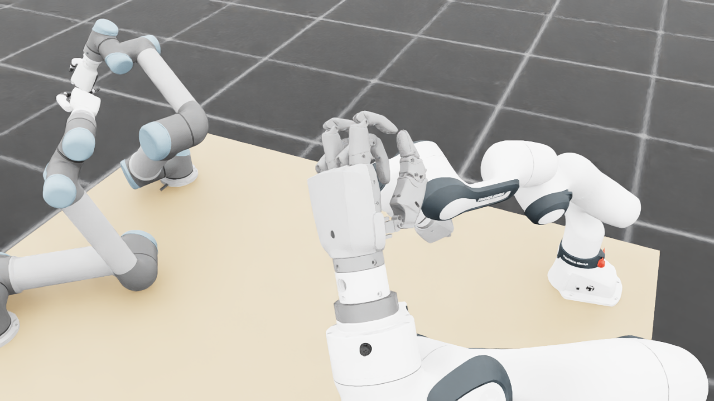
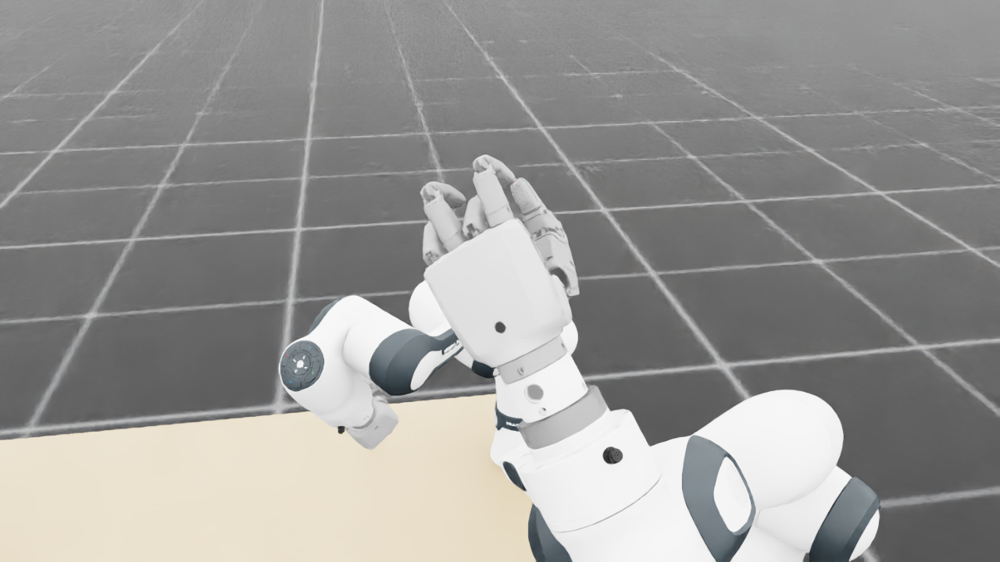
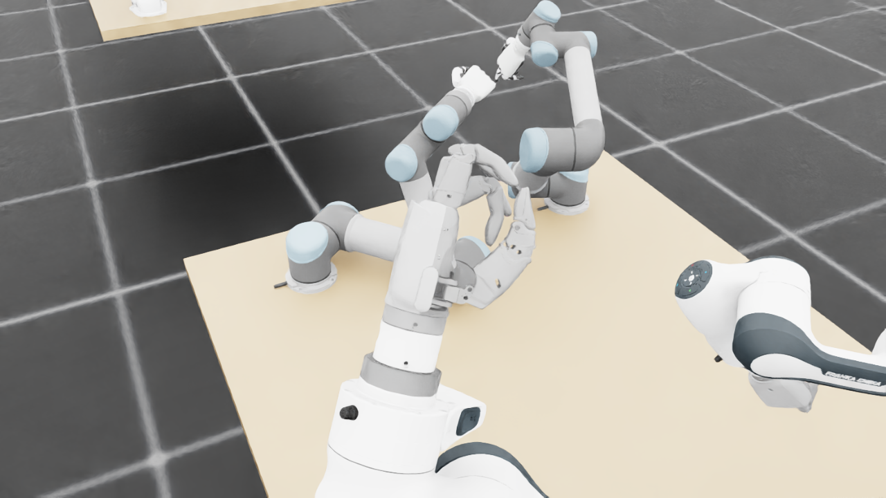
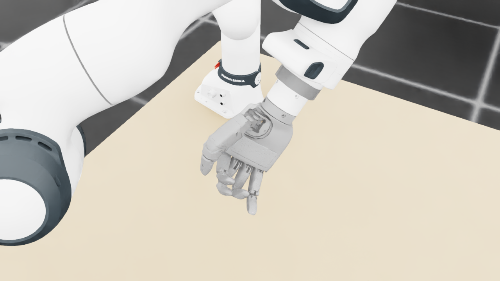
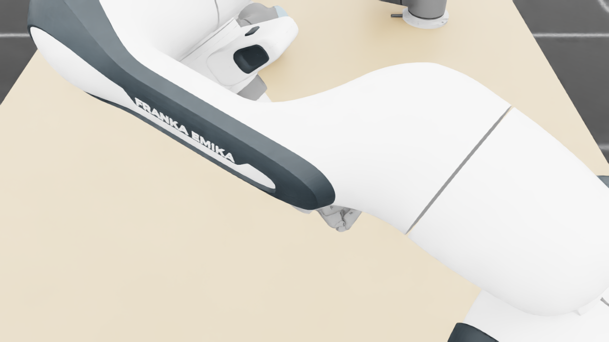
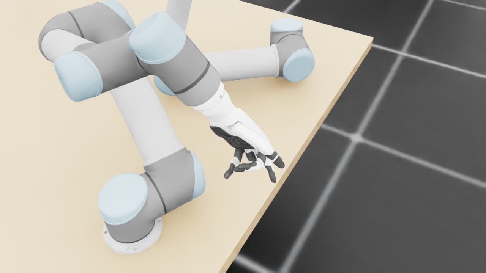
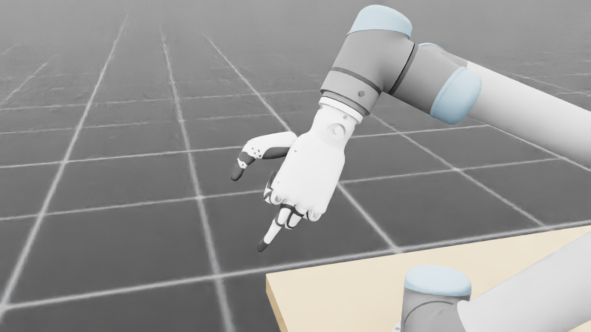
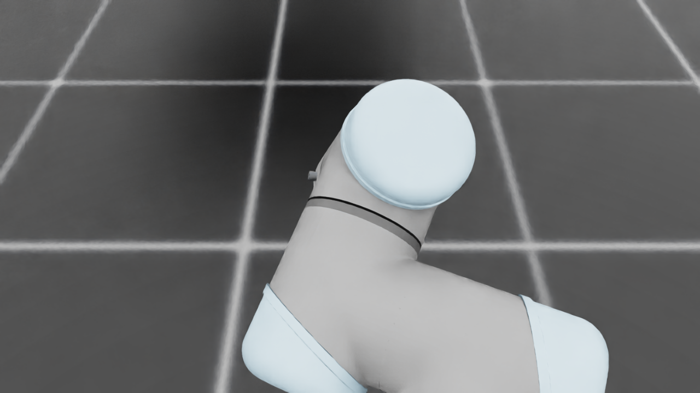
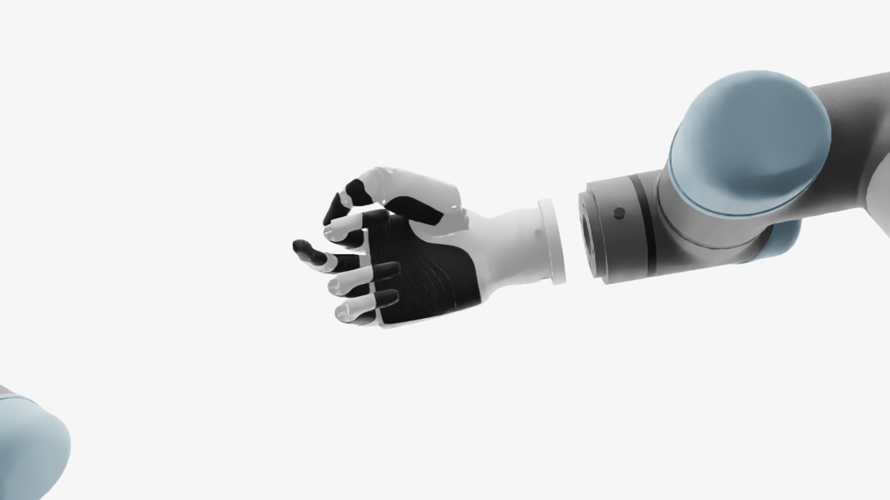
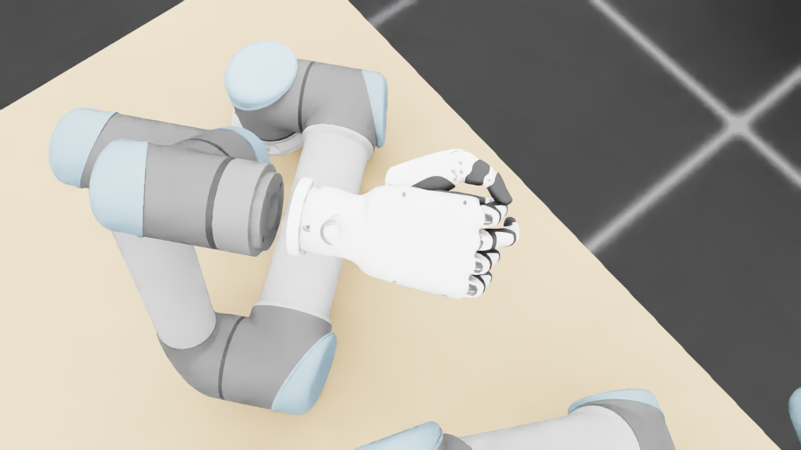
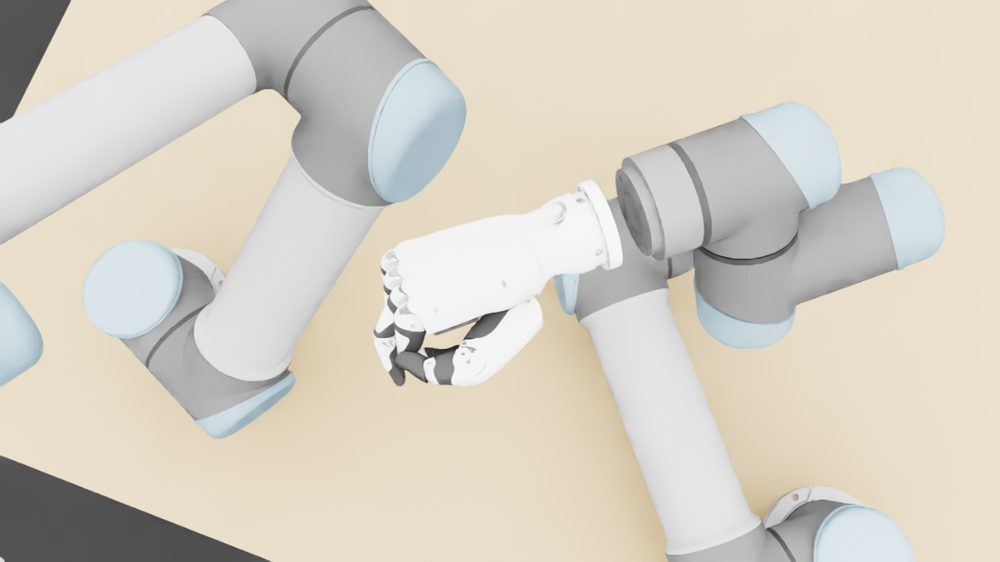
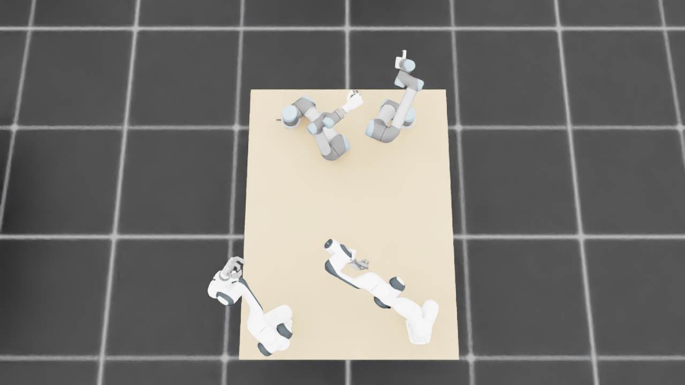
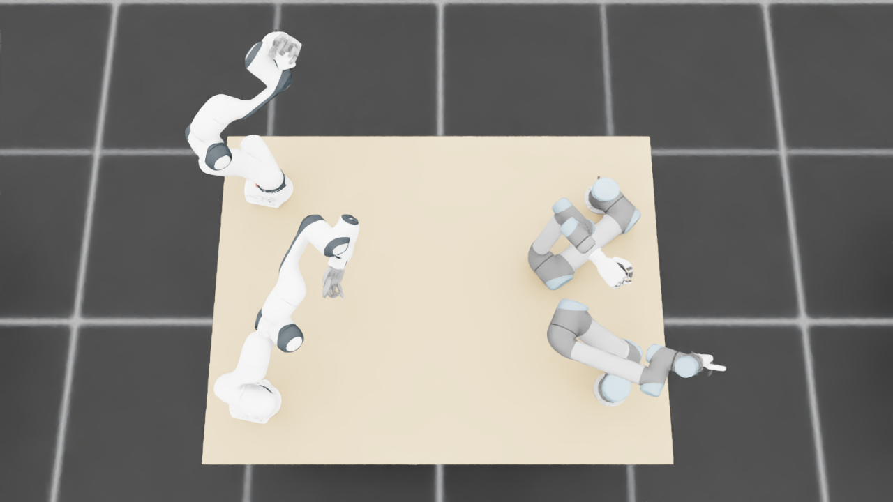
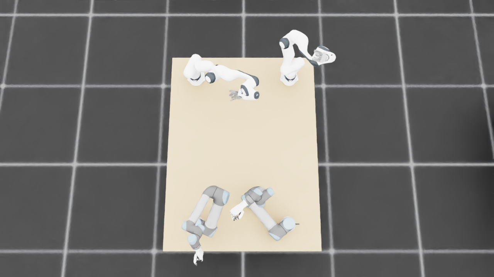
{
"qualified": true,
"arms": {
"F_L": {
"qualified": true,
"palm_visual_peak_pixels": 25445,
"finger_family_peak_pixels": {
"thumb": 8471,
"index": 4825,
"middle": 3091,
"ring": 3299,
"little": 996
},
"per_native_body_peak_pixels": {
"/World/envs/env_19/F_L/f2_hand/left_hand_base": 30762,
"/World/envs/env_19/F_L/f2_hand/left_index_1": 2863,
"/World/envs/env_19/F_L/f2_hand/left_middle_1": 1144,
"/World/envs/env_19/F_L/f2_hand/left_pinky_1": 992,
"/World/envs/env_19/F_L/f2_hand/left_ring_1": 2190,
"/World/envs/env_19/F_L/f2_hand/left_thumb_1": 833,
"/World/envs/env_19/F_L/f2_hand/left_index_2": 1962,
"/World/envs/env_19/F_L/f2_hand/left_middle_2": 1947,
"/World/envs/env_19/F_L/f2_hand/left_pinky_2": 309,
"/World/envs/env_19/F_L/f2_hand/left_ring_2": 1109,
"/World/envs/env_19/F_L/f2_hand/left_thumb_2": 4472,
"/World/envs/env_19/F_L/f2_hand/left_thumb_3": 1784,
"/World/envs/env_19/F_L/f2_hand/left_thumb_4": 1382
},
"native_body_visibility_gaps": [],
"all_native_hand_bodies_observed": true,
"full_mesh_coverage_certified": false,
"all_recorded_attempt_peak": {
"qualified": true,
"palm_visual_peak_pixels": 25445,
"finger_family_peak_pixels": {
"thumb": 8471,
"index": 4825,
"middle": 3091,
"ring": 3299,
"little": 996
},
"per_native_body_peak_pixels": {
"/World/envs/env_19/F_L/f2_hand/left_hand_base": 30762,
"/World/envs/env_19/F_L/f2_hand/left_index_1": 2863,
"/World/envs/env_19/F_L/f2_hand/left_middle_1": 1144,
"/World/envs/env_19/F_L/f2_hand/left_pinky_1": 992,
"/World/envs/env_19/F_L/f2_hand/left_ring_1": 2190,
"/World/envs/env_19/F_L/f2_hand/left_thumb_1": 833,
"/World/envs/env_19/F_L/f2_hand/left_index_2": 1962,
"/World/envs/env_19/F_L/f2_hand/left_middle_2": 1947,
"/World/envs/env_19/F_L/f2_hand/left_pinky_2": 309,
"/World/envs/env_19/F_L/f2_hand/left_ring_2": 1109,
"/World/envs/env_19/F_L/f2_hand/left_thumb_2": 4472,
"/World/envs/env_19/F_L/f2_hand/left_thumb_3": 1784,
"/World/envs/env_19/F_L/f2_hand/left_thumb_4": 1382
},
"native_body_visibility_gaps": [],
"all_native_hand_bodies_observed": true,
"full_mesh_coverage_certified": false,
"qualification": false
},
"attempts": 3,
"decoded": 3
},
"F_R": {
"qualified": true,
"palm_visual_peak_pixels": 27924,
"finger_family_peak_pixels": {
"thumb": 9174,
"index": 2638,
"middle": 2694,
"ring": 2707,
"little": 3159
},
"per_native_body_peak_pixels": {
"/World/envs/env_19/F_R/f2_hand/right_hand_base": 33822,
"/World/envs/env_19/F_R/f2_hand/right_index_1": 1475,
"/World/envs/env_19/F_R/f2_hand/right_middle_1": 2208,
"/World/envs/env_19/F_R/f2_hand/right_pinky_1": 1768,
"/World/envs/env_19/F_R/f2_hand/right_ring_1": 2079,
"/World/envs/env_19/F_R/f2_hand/right_thumb_1": 396,
"/World/envs/env_19/F_R/f2_hand/right_index_2": 1163,
"/World/envs/env_19/F_R/f2_hand/right_middle_2": 1218,
"/World/envs/env_19/F_R/f2_hand/right_pinky_2": 1391,
"/World/envs/env_19/F_R/f2_hand/right_ring_2": 979,
"/World/envs/env_19/F_R/f2_hand/right_thumb_2": 5547,
"/World/envs/env_19/F_R/f2_hand/right_thumb_3": 2025,
"/World/envs/env_19/F_R/f2_hand/right_thumb_4": 1364
},
"native_body_visibility_gaps": [],
"all_native_hand_bodies_observed": true,
"full_mesh_coverage_certified": false,
"all_recorded_attempt_peak": {
"qualified": false,
"palm_visual_peak_pixels": 29403,
"finger_family_peak_pixels": {
"thumb": 10052,
"index": 3933,
"middle": 4404,
"ring": 2707,
"little": 5410
},
"per_native_body_peak_pixels": {
"/World/envs/env_19/F_R/f2_hand/right_hand_base": 35650,
"/World/envs/env_19/F_R/f2_hand/right_index_1": 2979,
"/World/envs/env_19/F_R/f2_hand/right_middle_1": 2720,
"/World/envs/env_19/F_R/f2_hand/right_pinky_1": 3398,
"/World/envs/env_19/F_R/f2_hand/right_ring_1": 2100,
"/World/envs/env_19/F_R/f2_hand/right_thumb_1": 976,
"/World/envs/env_19/F_R/f2_hand/right_index_2": 1967,
"/World/envs/env_19/F_R/f2_hand/right_middle_2": 2029,
"/World/envs/env_19/F_R/f2_hand/right_pinky_2": 2012,
"/World/envs/env_19/F_R/f2_hand/right_ring_2": 1391,
"/World/envs/env_19/F_R/f2_hand/right_thumb_2": 5547,
"/World/envs/env_19/F_R/f2_hand/right_thumb_3": 2383,
"/World/envs/env_19/F_R/f2_hand/right_thumb_4": 1763
},
"native_body_visibility_gaps": [],
"all_native_hand_bodies_observed": true,
"full_mesh_coverage_certified": false,
"qualification": false
},
"attempts": 8,
"decoded": 8
},
"U_L": {
"qualified": true,
"palm_visual_peak_pixels": 2467,
"finger_family_peak_pixels": {
"thumb": 6469,
"index": 1743,
"middle": 2718,
"ring": 1386,
"little": 1706
},
"per_native_body_peak_pixels": {
"/World/envs/env_19/U_L/wrist_3_link": 33863,
"/World/envs/env_19/U_L/left_index_1": 838,
"/World/envs/env_19/U_L/left_little_1": 902,
"/World/envs/env_19/U_L/left_middle_1": 1496,
"/World/envs/env_19/U_L/left_ring_1": 1312,
"/World/envs/env_19/U_L/left_thumb_1": 104,
"/World/envs/env_19/U_L/left_index_2": 1054,
"/World/envs/env_19/U_L/left_little_2": 804,
"/World/envs/env_19/U_L/left_middle_2": 1222,
"/World/envs/env_19/U_L/left_ring_2": 362,
"/World/envs/env_19/U_L/left_thumb_2": 3913,
"/World/envs/env_19/U_L/left_thumb_3": 1789,
"/World/envs/env_19/U_L/left_thumb_4": 767
},
"native_body_visibility_gaps": [],
"all_native_hand_bodies_observed": true,
"full_mesh_coverage_certified": false,
"all_recorded_attempt_peak": {
"qualified": false,
"palm_visual_peak_pixels": 11862,
"finger_family_peak_pixels": {
"thumb": 8722,
"index": 2674,
"middle": 2911,
"ring": 2261,
"little": 2601
},
"per_native_body_peak_pixels": {
"/World/envs/env_19/U_L/wrist_3_link": 33968,
"/World/envs/env_19/U_L/left_index_1": 1619,
"/World/envs/env_19/U_L/left_little_1": 1569,
"/World/envs/env_19/U_L/left_middle_1": 1496,
"/World/envs/env_19/U_L/left_ring_1": 1312,
"/World/envs/env_19/U_L/left_thumb_1": 448,
"/World/envs/env_19/U_L/left_index_2": 1474,
"/World/envs/env_19/U_L/left_little_2": 1032,
"/World/envs/env_19/U_L/left_middle_2": 1603,
"/World/envs/env_19/U_L/left_ring_2": 1320,
"/World/envs/env_19/U_L/left_thumb_2": 4891,
"/World/envs/env_19/U_L/left_thumb_3": 2424,
"/World/envs/env_19/U_L/left_thumb_4": 1087
},
"native_body_visibility_gaps": [],
"all_native_hand_bodies_observed": true,
"full_mesh_coverage_certified": false,
"qualification": false
},
"attempts": 8,
"decoded": 8
},
"U_R": {
"qualified": true,
"palm_visual_peak_pixels": 15813,
"finger_family_peak_pixels": {
"thumb": 10951,
"index": 3421,
"middle": 2819,
"ring": 3216,
"little": 3114
},
"per_native_body_peak_pixels": {
"/World/envs/env_19/U_R/wrist_3_link": 57380,
"/World/envs/env_19/U_R/right_index_1": 1826,
"/World/envs/env_19/U_R/right_little_1": 1066,
"/World/envs/env_19/U_R/right_middle_1": 1788,
"/World/envs/env_19/U_R/right_ring_1": 1190,
"/World/envs/env_19/U_R/right_thumb_1": 604,
"/World/envs/env_19/U_R/right_index_2": 2186,
"/World/envs/env_19/U_R/right_little_2": 2048,
"/World/envs/env_19/U_R/right_middle_2": 1454,
"/World/envs/env_19/U_R/right_ring_2": 2381,
"/World/envs/env_19/U_R/right_thumb_2": 6624,
"/World/envs/env_19/U_R/right_thumb_3": 2875,
"/World/envs/env_19/U_R/right_thumb_4": 1247
},
"native_body_visibility_gaps": [],
"all_native_hand_bodies_observed": true,
"full_mesh_coverage_certified": false,
"all_recorded_attempt_peak": {
"qualified": false,
"palm_visual_peak_pixels": 15813,
"finger_family_peak_pixels": {
"thumb": 10951,
"index": 3421,
"middle": 2819,
"ring": 3216,
"little": 3114
},
"per_native_body_peak_pixels": {
"/World/envs/env_19/U_R/wrist_3_link": 67765,
"/World/envs/env_19/U_R/right_index_1": 1826,
"/World/envs/env_19/U_R/right_little_1": 1353,
"/World/envs/env_19/U_R/right_middle_1": 1983,
"/World/envs/env_19/U_R/right_ring_1": 1383,
"/World/envs/env_19/U_R/right_thumb_1": 604,
"/World/envs/env_19/U_R/right_index_2": 2186,
"/World/envs/env_19/U_R/right_little_2": 2048,
"/World/envs/env_19/U_R/right_middle_2": 1454,
"/World/envs/env_19/U_R/right_ring_2": 2381,
"/World/envs/env_19/U_R/right_thumb_2": 6624,
"/World/envs/env_19/U_R/right_thumb_3": 2875,
"/World/envs/env_19/U_R/right_thumb_4": 1247
},
"native_body_visibility_gaps": [],
"all_native_hand_bodies_observed": true,
"full_mesh_coverage_certified": false,
"qualification": false
},
"attempts": 4,
"decoded": 4
}
},
"wide": {
"qualified": true,
"per_native_object_peak_pixels": {
"/World/envs/env_19/F_L/fr3_link0": 1944,
"/World/envs/env_19/F_L/fr3_link1": 1204,
"/World/envs/env_19/F_L/fr3_link2": 2797,
"/World/envs/env_19/F_L/fr3_link3": 924,
"/World/envs/env_19/F_L/fr3_link4": 3231,
"/World/envs/env_19/F_L/fr3_link5": 4195,
"/World/envs/env_19/F_L/fr3_link6": 1542,
"/World/envs/env_19/F_L/fr3_link7": 761,
"/World/envs/env_19/F_L/fr3_link8": 130,
"/World/envs/env_19/F_L/f2_hand/left_hand_base": 495,
"/World/envs/env_19/F_L/f2_hand/left_index_1": 71,
"/World/envs/env_19/F_L/f2_hand/left_middle_1": 121,
"/World/envs/env_19/F_L/f2_hand/left_pinky_1": 80,
"/World/envs/env_19/F_L/f2_hand/left_ring_1": 65,
"/World/envs/env_19/F_L/f2_hand/left_thumb_1": 25,
"/World/envs/env_19/F_L/f2_hand/left_index_2": 119,
"/World/envs/env_19/F_L/f2_hand/left_middle_2": 55,
"/World/envs/env_19/F_L/f2_hand/left_pinky_2": 94,
"/World/envs/env_19/F_L/f2_hand/left_ring_2": 124,
"/World/envs/env_19/F_L/f2_hand/left_thumb_2": 105,
"/World/envs/env_19/F_L/f2_hand/left_thumb_3": 51,
"/World/envs/env_19/F_L/f2_hand/left_thumb_4": 61,
"/World/envs/env_19/F_R/fr3_link0": 1152,
"/World/envs/env_19/F_R/fr3_link1": 1966,
"/World/envs/env_19/F_R/fr3_link2": 2593,
"/World/envs/env_19/F_R/fr3_link3": 2316,
"/World/envs/env_19/F_R/fr3_link4": 3234,
"/World/envs/env_19/F_R/fr3_link5": 4169,
"/World/envs/env_19/F_R/fr3_link6": 2500,
"/World/envs/env_19/F_R/fr3_link7": 552,
"/World/envs/env_19/F_R/fr3_link8": 0,
"/World/envs/env_19/F_R/f2_hand/right_hand_base": 583,
"/World/envs/env_19/F_R/f2_hand/right_index_1": 32,
"/World/envs/env_19/F_R/f2_hand/right_middle_1": 14,
"/World/envs/env_19/F_R/f2_hand/right_pinky_1": 69,
"/World/envs/env_19/F_R/f2_hand/right_ring_1": 56,
"/World/envs/env_19/F_R/f2_hand/right_thumb_1": 14,
"/World/envs/env_19/F_R/f2_hand/right_index_2": 60,
"/World/envs/env_19/F_R/f2_hand/right_middle_2": 27,
"/World/envs/env_19/F_R/f2_hand/right_pinky_2": 59,
"/World/envs/env_19/F_R/f2_hand/right_ring_2": 47,
"/World/envs/env_19/F_R/f2_hand/right_thumb_2": 182,
"/World/envs/env_19/F_R/f2_hand/right_thumb_3": 43,
"/World/envs/env_19/F_R/f2_hand/right_thumb_4": 20,
"/World/envs/env_19/U_L/base_link": 446,
"/World/envs/env_19/U_L/shoulder_link": 1509,
"/World/envs/env_19/U_L/upper_arm_link": 4645,
"/World/envs/env_19/U_L/forearm_link": 5822,
"/World/envs/env_19/U_L/wrist_1_link": 1184,
"/World/envs/env_19/U_L/wrist_2_link": 1166,
"/World/envs/env_19/U_L/wrist_3_link": 563,
"/World/envs/env_19/U_L/left_index_1": 28,
"/World/envs/env_19/U_L/left_little_1": 0,
"/World/envs/env_19/U_L/left_middle_1": 8,
"/World/envs/env_19/U_L/left_ring_1": 0,
"/World/envs/env_19/U_L/left_thumb_1": 10,
"/World/envs/env_19/U_L/left_index_2": 43,
"/World/envs/env_19/U_L/left_little_2": 9,
"/World/envs/env_19/U_L/left_middle_2": 21,
"/World/envs/env_19/U_L/left_ring_2": 8,
"/World/envs/env_19/U_L/left_thumb_2": 184,
"/World/envs/env_19/U_L/left_thumb_3": 45,
"/World/envs/env_19/U_L/left_thumb_4": 14,
"/World/envs/env_19/U_R/base_link": 344,
"/World/envs/env_19/U_R/shoulder_link": 1625,
"/World/envs/env_19/U_R/upper_arm_link": 5569,
"/World/envs/env_19/U_R/forearm_link": 2815,
"/World/envs/env_19/U_R/wrist_1_link": 506,
"/World/envs/env_19/U_R/wrist_2_link": 1147,
"/World/envs/env_19/U_R/wrist_3_link": 1847,
"/World/envs/env_19/U_R/right_index_1": 51,
"/World/envs/env_19/U_R/right_little_1": 43,
"/World/envs/env_19/U_R/right_middle_1": 71,
"/World/envs/env_19/U_R/right_ring_1": 46,
"/World/envs/env_19/U_R/right_thumb_1": 2,
"/World/envs/env_19/U_R/right_index_2": 30,
"/World/envs/env_19/U_R/right_little_2": 0,
"/World/envs/env_19/U_R/right_middle_2": 32,
"/World/envs/env_19/U_R/right_ring_2": 0,
"/World/envs/env_19/U_R/right_thumb_2": 191,
"/World/envs/env_19/U_R/right_thumb_3": 101,
"/World/envs/env_19/U_R/right_thumb_4": 43,
"/World/envs/env_19/TableF": 124796,
"/World/envs/env_19/TableU": 123001
},
"arm_peak_pixels": {
"F_L": 17485,
"F_R": 19644,
"U_L": 15366,
"U_R": 14298
},
"table_peak_pixels": {
"TableF": 124796,
"TableU": 123001
},
"critical_body_peak_pixels": {
"/World/envs/env_19/U_L/forearm_link": 5822,
"/World/envs/env_19/U_L/wrist_2_link": 1166,
"/World/envs/env_19/U_R/forearm_link": 2815,
"/World/envs/env_19/U_R/wrist_2_link": 1147
}
},
"raw_attempt_count": 35,
"PNG_count": 35,
"angle_records": 35,
"max_actual_angle_identity_error_deg": 0.0,
"held_snapshot_checks": 1216,
"universal_visibility_impossible": false,
"full_mesh_coverage_certified": false
}